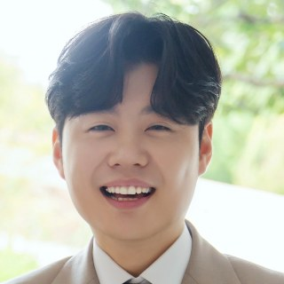

1995년생 · 남 · 010-3660-1769
"누가 알았겠어요, 동네 서비스를 전국으로 넓힐 수 있었을지."
데이터로 보이지 않는 가능성까지 바라봅니다.
문제 정의 → 가설 → 실행 → 결과 → 러닝. 대표 사례 3건을 깊이 있게 정리했습니다.
수도권 모델 구축, 물류 3사 파트너십, 수요예측 자동발주 역제안, 기술 조직 내재화까지 — 성장의 병목을 하나씩 제거한 2년.
서비스 이원화와 본부용 데이터 대시보드로 새 고객·새 수익 채널을 연 0→1 런칭. 기술연구부 6인 개발 리드.
임대몰로 먼저 검증(첫 달 3,000만 원·월 2,000건), 자체 앱·POS/ERP로 상용화, 그리고 기회비용 앞에서 접은 전략적 피벗까지.
총 9년 · 리더십 5년 (팀장 3년 + 총괄 2년) — 회사명을 누르면 상세가 열립니다
AI 기반 외식업 오퍼레이팅 플랫폼 — 전국 스케일업 및 신사업 총괄 · 30여 명 조직 리드(온라인 10·물류 24) · 전사/부서 P&L 분석·개선
지역 밀착형 O2O 퀵커머스 '부스트' 구축 및 오프라인 운영 총괄 · 20여 명 조직 리드 · 고객 P&L 분석
신선식품(농산) 대형 리테일 공급 및 이커머스 운영
㈜우리물산 자사몰·오픈마켓 MD · 2018.01–2018.11 — 오픈마켓 기획전 참여, 자사몰 이벤트 기획·매출 분석
㈜퍼스트가구 자사몰·오픈마켓 MD · 2017.06–2018.01 — 스튜디오 촬영·상세페이지 제작, 기획전 운영, 제품 P&L 분석
해병대 복무 (2014–2016) / ㈜누비지오 자사몰 AMD·인하우스 웹디자인 · 2013.08–2014.02
직접 구축·운영하는 전략 아카이브 — 매출·마진·현금흐름(CCC)·코호트 인터랙티브 대시보드 7종, GitHub Actions 기반 주간 시장 뉴스 자동 발행. (수치는 비식별화된 예시 데이터)
부모–자녀 리워드 에듀 플랫폼을 시장분석부터 설계한 풀 패키지 — 사업기획서, 시드 피치덱 32장, 캡테이블 시뮬레이터, 와이어프레임. VC 피드백을 반영해 계속 개정 중.
상품 인터뷰 → 상세페이지 HTML 생성 → 스마트스토어용 이미지 변환 파이프라인을 AI 기반으로 구축. (요청 시 시연 가능)